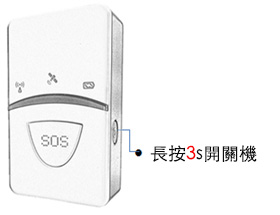
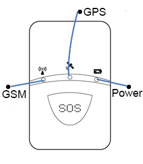
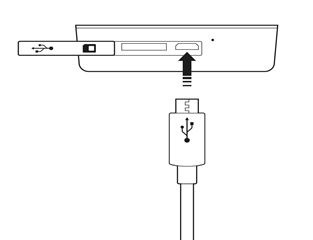

PT-718 個人追踪器使用手冊
封面

綁定追踪器
1、在設備中裝入SIM卡
2、啟動設備:按設備開關鍵3秒即可開啟設備
3、登錄航通守護者APP，點擊添加新設備按鈕，選擇綁定PT718（個人SOS智能定位器）設備
4、點擊【掃一掃】圖標，掃描設備背面的二維碼
5、驗證成功後自動完成追踪器的綁定
追踪器介紹
1、指示燈簡介

2.指示燈狀態說明
| 名稱 | 說明 |
|---|---|
| 電源指示燈 | 紅色省電LED 1.充電中：常亮； 2.開機未定位：開機未定位前常亮； 3.定位成功：不亮； 4.按SOS ：快閃，1S/次，持續20S； 5.低電壓：慢閃：8S/次； |
| GSM指示燈 | 登錄成功後, 每2S/次! |
| 定位衛星指示燈 | 定位後每2S/次! |
SOS按鍵使用
如遇見危險情況，長按SOS 按鈕3S ，直至紅色LED 快速閃爍，追踪器可發短信通知緊急聯絡人，同時推送報警信息至APP，以便及時獲得援助；

充電方法
連接充電座
紅色LED 常亮表示充電中
紅色LED滅則表示充電完成

注意事項
1、請不要將產品浸泡水中；
2、請將產品遠離火源、高溫高熱等極端環境
3、本產品在斷電狀態和服務區外時，定位功能無法工作；
配件介紹
1.Micro USB 線；
2.佩戴繩
常見問題
1.為什麼無法開機？
答：可能由於電池耗盡導致，請連接充電器充電後再開機。
2.綁定設備失敗？
答：綁定設備需要在網絡信號良好的情況下進行，請確保網絡信號良好。
3.為什麼定位不成功？
答：設備需要在空曠的位置方可準確定位，請檢查所處的環境；建議首次定位在室外空曠位置進行。
4.為什麼未配置電源適配器
答：設備支持主流手機適配器，為環保考慮，所以未配置電源適配器。
注意事項
1、一個設備僅能被一個賬戶綁定, 可以被主賬戶授權給其他三個賬戶；
2、請將產品遠離火源、高溫高熱等極端環境
3、本產品在斷電狀態和無網絡服務時，定位功能無法工作；
售後服務
請諮詢當地的業務人員或者我司售後服務中心。
聯繫我們
有任何問題或建議，歡迎您隨時聯繫我們。
中國大陸
官方微信：航通守護者
客服QQ:3106893070
服務熱線：0755-8601 8738
中國香港
服務熱線：+852-26273380
郵箱：cs-liteguardian@castelbeidou.com
海外
郵箱: sales@castelbds.com
公司網頁:www.lite-guardian.com
服務熱線:+8675586018742